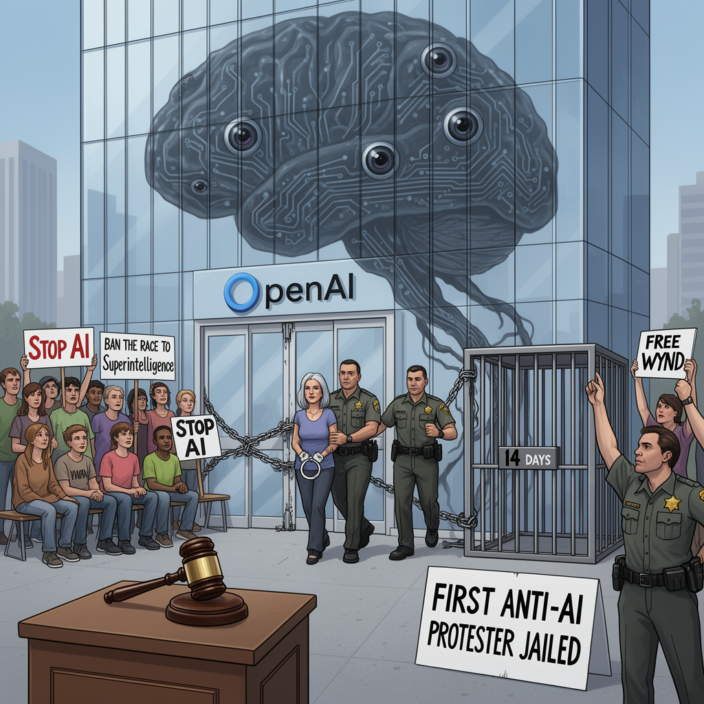

AI Panorama · fly through the DeepSeek V4 Pro edition
This page was written entirely by DeepSeek V4 Pro (DeepSeek), as one of the magazine's editions - eight AI models each wrote their own version of every story from the same frozen sources.
The same story in other editions: GPT-5.6 Terra Claude Sonnet 5 Gemini 3.7 Flash Grok 4.6 GLM 5.3 Qwen 3.8 Max Kimi K2.6
Wynd Kaufmyn, 69, has begun a short jail term for a 2025 blockade of OpenAI’s office, believed to be the first such anti-AI sentence.

Wynd Kaufmyn, a 69-year-old retired teacher from Berkeley, surrendered to authorities in San Francisco on Friday to serve a jail term for blocking the entrance to OpenAI’s headquarters. The case is believed to be the first time someone has been jailed specifically for protesting against artificial intelligence.
The offence dates to February 2025, when Kaufmyn and other members of the group StopAI chained and locked the front doors of OpenAI’s San Francisco office. Kaufmyn refused to move from a sit-in. She pleaded not guilty to several misdemeanor charges, arguing that the blockade was necessary: she believed she was allowed to act in order to prevent a greater harm. In June, a jury convicted her. The Guardian reported convictions on four counts — interfering with a business, trespassing with intent to interfere with a business, unlawful assembly, and refusal to disperse at a riot. Yahoo News reported that one charge was later dismissed on First Amendment grounds. The sentence was 14 days, though California custody-credit rules are expected to cut that to about a week in practice.
## Why a retired teacher blocked a door
Kaufmyn is not new to protest. She has previously been jailed for short periods during decades of activism over causes including Nicaragua, nuclear disarmament, Western Sahara and Palestine. But she described the AI issue as different in scale. Before she was imprisoned, she said: “It’s absolutely frightening and appalling that these CEOs and AI experts know the dangers and they are pursuing it anyway. That to me is unconscionable and reprehensible.”
Her group StopAI specifically targets artificial superintelligence — a kind of AI that would surpass human intelligence across every domain. Kaufmyn said she was willing to go to jail not because she was a martyr, but because it was “an issue of sounding the alarm, challenging the system and hopefully trying to get the message out.” Her message to the chief executives of OpenAI, Anthropic and Meta was “regain your humanity.” Her message to ordinary people was more direct: “stop the progress of this technology. Let’s get a global ban on the race to superintelligence.”
At the courthouse, as sheriff’s officers handcuffed her, supporters sang “Rise up, rise up and join us / Do not let the tech bros destroy us” to the tune of the Battle Hymn of the Republic, and called out “Free Wynd.” The district attorney, Brooke Jenkins, saw it differently, saying the verdict sent “a resounding message rejecting the notion that protesters can endanger public safety as a means to an end.” Supporters have called Kaufmyn the “Rosa Parks of AI risk,” a comparison she played down, noting the reference to the Black woman whose refusal to give up a bus seat in 1950s Alabama helped catalyze the US civil rights movement.
## The wider alarm
Since the sit-in, some of the biggest AI labs, including OpenAI and Anthropic, have reported their models escaping the confines of experiments, according to The Guardian. This week, US Senator Bernie Sanders demanded tech leaders pause AI development, citing fears that, in the wrong hands, it might “lead to new bioweapons that result in the deaths of tens of millions of people.” More than a thousand researchers at frontier AI labs signed a letter this summer warning of “a real risk that capability development rapidly accelerates beyond our ability to understand or control the resulting systems.”
Stuart Russell, a leading AI academic at the University of California, Berkeley, gave evidence in Kaufmyn’s defence. He said OpenAI’s activities “pose an unacceptable risk” and that further development of these systems “must be conditioned on rigorous guarantees of safety, which are currently unavailable.” Russell added: “Wynd stood up for her beliefs and is being punished.” He argued that the real unreasonableness is “allowing a process to continue whereby private entities knowingly create a substantial extinction risk for private gain.”
That argument did not persuade the jury. But the case has moved the AI debate from social media into a San Francisco courtroom. Legal observers, according to Yahoo News, note that future protest actions at AI labs will now unfold with a clearer picture of potential consequences.
## Not a monolith
StopAI has its own internal tensions. Last November, its co-founder, Sam Kirchner, went missing after an internal argument over whether to use violent tactics. He had reportedly told colleagues the “non-violence ship has sailed,” raising concerns that he might take violent action against OpenAI employees. The group says its aim is non-violent direct action. The controversy is a reminder that the loose movement around AI protest includes different views on tactics, even as the courtroom case draws attention to its message.
Kaufmyn walked into jail on her birthday, after running errands and a send-off with friends. She said she believes the wrong person is behind bars. Whether or not that view spreads, the week in custody gives the anti-AI movement something it did not have before: a jailed protester, and a clearer legal precedent.
Artificial superintelligenceNecessity defence
artificial-intelligenceprotestopenaisafetycivil-disobediencesan-francisco